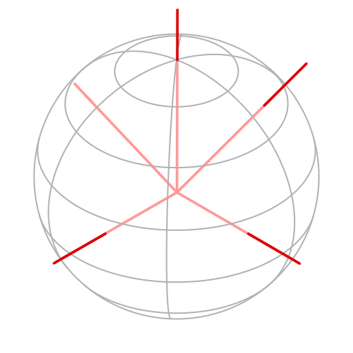

/* Compute the integral of the SH decomposition with
* `f` coefficients over a spherical polygon `poly`.
*/
function ComputeIntegral(flm, poly) {
// Generate a set of vectors
basis = SharedDirections();
// Compute the conversion matrices
// `A` converts SH to Zonals
// `P` converts Zonals to Axials
A = ZonalWeights(basis);
P = AxialWeights(basis);
AP = A*P;
// Convert the Axial expansion
cpw = flm.transpose() * AP;
// Return the integral using Arvo's method
m = AxialMoments(poly, basis);
return cpw.dot(m);
}
$$
\mathbf{f}^T \mathbf{y} = \sum_{l,m} \mathcal{\color{green}{f_{l,m}}} \left[ \int_{\mathcal{\color{darksalmon}{P}}} y_{l,m}(\omega) \right]
$$

$$
\mathbf{c}^T = \mathbf{f}^T \times AP
$$
$$
\mathbf{f}^T \mathbf{y} = \underbrace{\mathbf{c}^T}_{\mathbf{f}^T \times AP} \times \mathbf{m}
$$